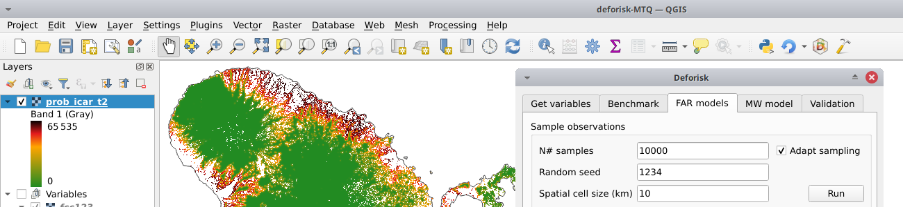

deforisk QGIS plugin#
Aim#
The deforisk QGis plugin can be used to map the deforestation risk for a country or area of interest. Four models can be used to derive the risk maps: the iCAR, GLM, Random Forest, and Moving Window models. These four models can be compared to a benchmark model which assumes a simple decrease of the deforestation risk with distance to forest edge. All models are calibrated using past deforestation observations for a given period of time between 2000 and 2022. Forest cover change maps can be provided by the user or derived from two global tree/forest cover change products: Global Forest Change and Tropical Moist Forests.
Deforestation risk maps obtained using this plugin can be used to estimate emission reduction impact of forest conservation projects within the VCS Jurisdictional and Nested REDD+ Framework.
Installing the deforisk plugin in Qgis#
Note
Qgis and GDAL must be installed on your system before using the deforisk plugin. On Unix-like systems only, you must also install osmconvert and osmfilter. On Windows systems, these dependencies are already included in the plugin as binary .exe files so you don’t need to install them. Then, the forestatrisk and riskmapjnr Python packages must be installed on your system. Follow the installation instructions to install all these dependencies on your system.
Download the
deforiskzip file from GitHub.Open Qgis.
In Qgis menu bar, go to
Extensions/Install extensions/Install from ZIP.Select the zip file that has been downloaded.
Funding#
The development of the plugin has been funded by Cirad and FAO.
{kind=link}
{kind=link}
Contributing#
The deforisk QGIS plugin is Open Source and released under the GNU GPL version 3 license. Anybody who is interested can contribute to the package development following our Community guidelines. Every contributor must agree to follow the project’s Code of conduct.